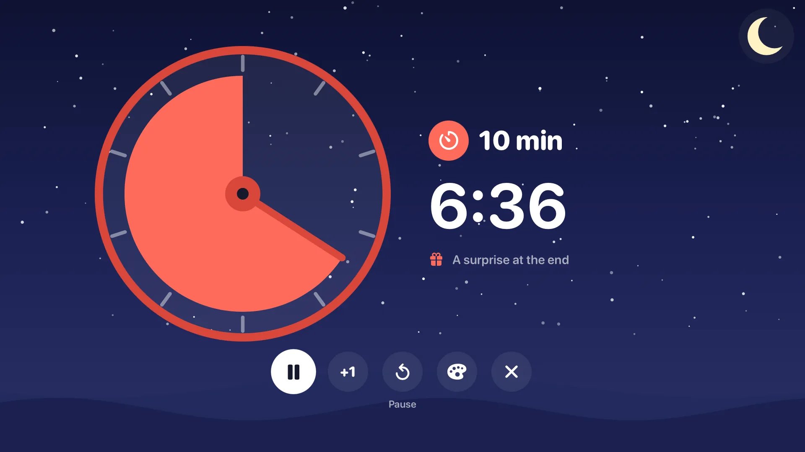
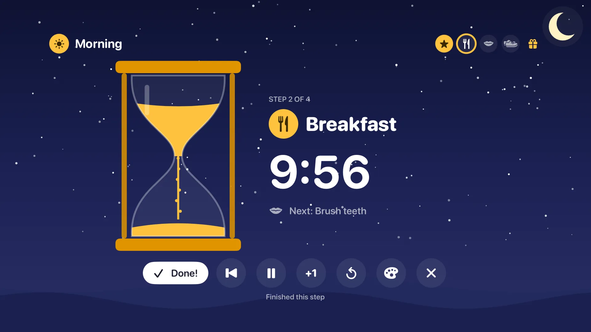
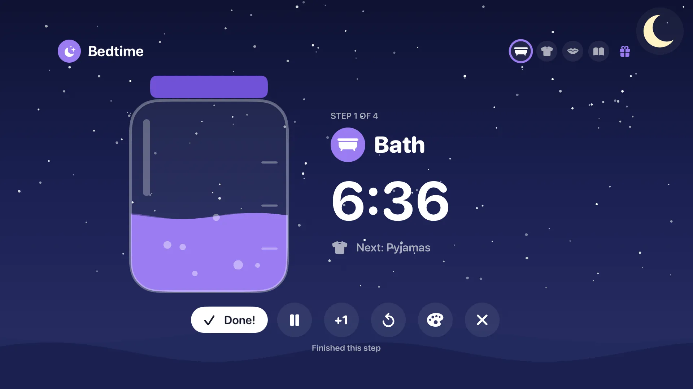
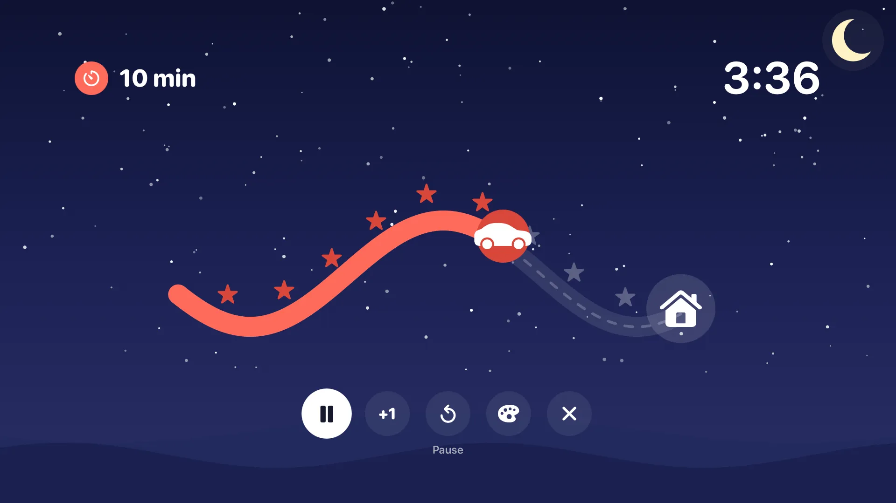
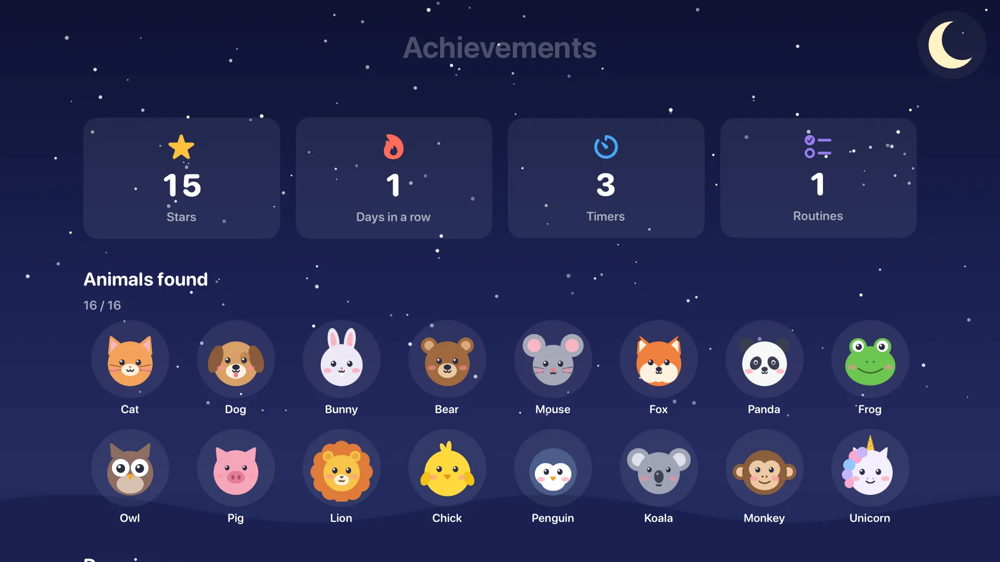
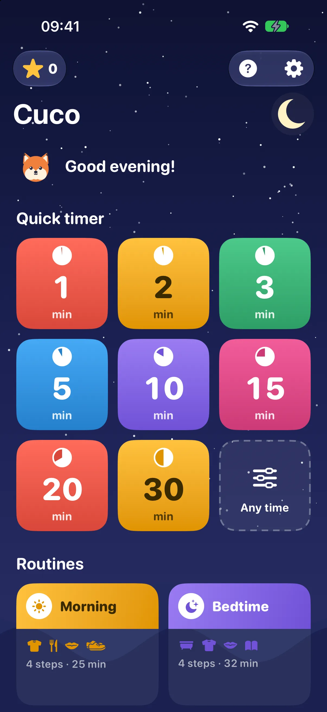
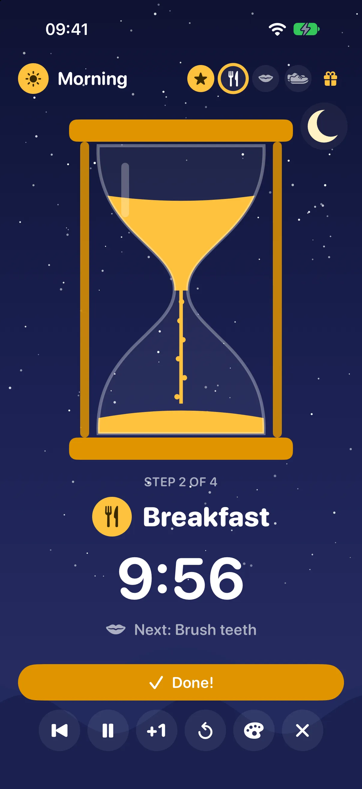
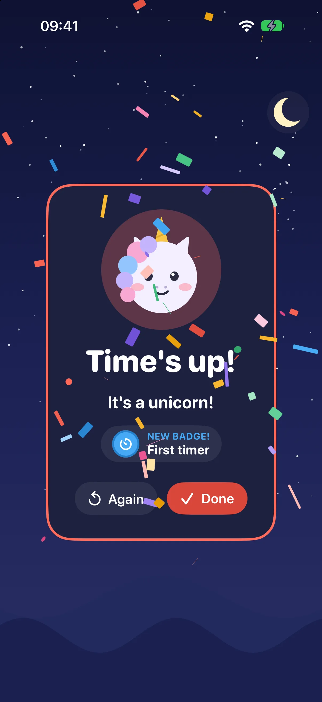
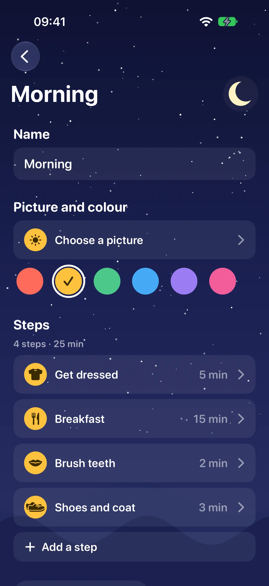

Cuco
Small children can’t read a clock yet, but they can watch time run out. Cuco shows the time left from across the room, takes them through their routines one step at a time, and, like a cuckoo clock, something pops out when the time is up: an animal, out of a present.
Time you can see
Made for the Apple TV first, so the whole family can see it from the sofa, and for iPhone and iPad when you’re out.
-
Five ways to see it
A disc whose slice shrinks, an hourglass, a jar of water that drains, a little car driving home, or a picture that appears piece by piece. Change the look any time, even while a timer runs.
-
Routines, one step at a time
Morning, bedtime, tidying up: each step has its own timer and picture. A child presses Done! when a step is finished to earn a star, and sees what’s next.
-
A surprise at the end
When the time is up, a present wiggles and one of sixteen animals pops out, a different one each time. Find them all and they start coming out dressed up, in party hats, crowns, sunglasses and bow ties.
-
Stars and badges
Stars for every step, days in a row, fifteen badges and an album of the animals found so far. Nothing to buy: everything a child earns is free.
-
A child each, on every screen
Each child has a name, an animal and a colour, with their own stars and animals. With iCloud, the children, their progress and the routines are the same on your Apple TV, iPhone and iPad.
-
Your own photos
A photo of the real toothbrush or the real school bag helps children who can’t read yet. Use them for steps, routines and the Picture look.
-
Gentle sounds
Soft music while a timer runs, an alarm to choose (the cuckoo, of course), a ding for each step done, and an optional “almost done” sign a little before the end.
-
Safe for small hands
No ads, no links, no chat. The remote’s Menu button asks before stopping a timer, the iPhone can lock everything but Done!, and buying is behind a check that a grown-up is there.
-
English and Portuguese
Cuco follows your device’s language. The sample routines appear in each device’s language, even when a TV in English and an iPhone in Portuguese share them.
- Apple TV 4K
- Apple TV HD
- iPhone
- iPad
- tvOS 17+
- iOS 17+
Free, with one purchase for the rest
What grown-ups set up is paid; what children earn never is.
Free
€0
- Every quick timer1 to 30 minutes, any length, or until a time.
- Three routinesMorning, bedtime and tidying up, ready to use.
- All the rewardsStars, the sixteen animals, their costumes and every badge.
- Disc and SandTwo looks, four backgrounds, music box, chime and cuckoo, for one child.
Cuco Complete
€4.99 once No subscription
- Your own routinesMake new ones and change any of them, step by step.
- Your photosReal photos for steps, routines and the Picture look.
- Every lookJar, Journey and Picture as well.
- More children, every soundA profile for each child, and all the backgrounds, music and alarms.
One purchase covers your Apple TV, iPhone and iPad, and your family with Family Sharing. Prices are in euros: the App Store shows the price for your country.
On the TV, from across the room





And on iPhone and iPad




Questions
What age is Cuco for?
For children who can’t read a clock yet, from about two to six. It’s in the App Store’s Kids category, for ages 5 and under, and older brothers and sisters often like the routines and badges too.
Para crianças que ainda não sabem ler as horas, dos dois aos seis anos, mais ou menos. Está na categoria Crianças da App Store, até aos 5 anos, e os irmãos mais velhos costumam gostar das rotinas e das medalhas também.
How do I use it with the Apple TV remote?
Pick a quick timer or a routine on Home and click. While a timer runs, Play/Pause pauses, and Menu asks before stopping, so nobody ends a timer by accident. The buttons under the timer add a minute, go back a step or change the look.
Escolha um temporizador rápido ou uma rotina no ecrã inicial e clique. Com o temporizador a contar, o botão Reproduzir/Pausa faz pausa e o botão Menu pergunta antes de parar, para ninguém acabar um temporizador sem querer. Os botões por baixo do temporizador acrescentam um minuto, voltam ao passo anterior ou mudam o aspeto.
Can my child leave the timer or change things?
On iPhone and iPad, turn on Settings › For grown-ups › Lock the buttons: while a timer runs, only Done! stays, and the rest is behind a lock you touch and hold. To keep a child in the app, use Guided Access (Settings › Accessibility). Purchases always ask for three numbers written in words first, which a child who can’t read can’t get past.
No iPhone e no iPad, ative Definições › Para os crescidos › Bloquear os botões: com o temporizador a contar, só fica o «Já está!», e o resto fica atrás de um cadeado que se desbloqueia mantendo o dedo. Para a criança não sair da app, use o Acesso guiado (Definições › Acessibilidade). As compras pedem sempre primeiro três números escritos por extenso, que uma criança que ainda não lê não consegue passar.
Do the TV and the iPhone share the routines?
Yes, when they’re signed in to the same Apple Account with iCloud: the children, their stars and animals, and the routines are the same everywhere. Each device keeps its own look, sounds and photos.
Sim, quando têm sessão iniciada na mesma conta Apple com o iCloud: as crianças, as suas estrelas e animais, e as rotinas são as mesmas em todo o lado. Cada dispositivo mantém o seu aspeto, os seus sons e as suas fotos.
I bought Cuco Complete. How do I get it on another device?
It belongs to your Apple Account, so you only pay once for your Apple TV, iPhone and iPad, and your family has it too with Family Sharing. It usually appears by itself; if not, open Settings › Cuco Complete › Restore purchase.
Fica associado à sua conta Apple, por isso paga uma só vez pela Apple TV, pelo iPhone e pelo iPad, e a sua família também o tem com a Partilha com a família. Normalmente aparece sozinho; se não, abra Definições › Cuco Completo › Restaurar compra.
Does Cuco collect anything about my children?
No. There’s no account, no ads and no tracking, and nothing is sent to us. Names, progress and photos stay on your devices and in your own iCloud. See the privacy policy.
Não. Não há conta, anúncios nem rastreamento, e nada nos é enviado. Os nomes, o progresso e as fotos ficam nos seus dispositivos e no seu próprio iCloud. Consulte a política de privacidade.
Which devices do I need?
Any Apple TV 4K or Apple TV HD with tvOS 17 or later, and any iPhone or iPad with iOS 17 or later. Cuco is made to stay smooth even on the Apple TV HD.
Qualquer Apple TV 4K ou Apple TV HD com tvOS 17 ou posterior, e qualquer iPhone ou iPad com iOS 17 ou posterior. O Cuco foi feito para correr de forma fluida mesmo na Apple TV HD.
How do I get help?
Email support@jfpfsolutions.com. We usually reply within one business day.
Envie um email para support@jfpfsolutions.com. Normalmente respondemos num dia útil.